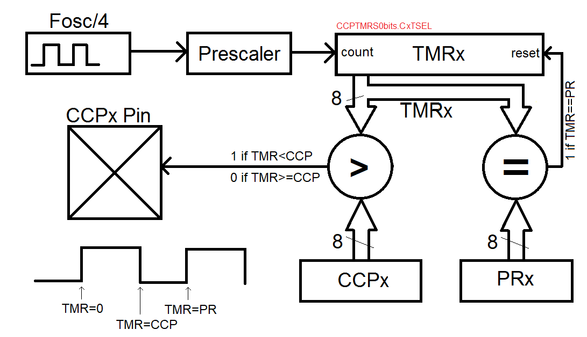

| Lecture: | 13 |
| Objective: | Configuration of the PWM subsystem to generate PWM waveforms with an arbitrary period and duty cycle. |
| Code: | pwm.c |
PWM
Pulse width modulated waveforms (PWM) are square waves with a constant period that are composed of a time high and time low that can change. The ratio of the time high to the period, expressed as a percentage, is called the duty cycle. The average value (measured in volts) of a PWM waveform is the duty cycle multiplied by the amplitude (in volts). The waveform has a constant period, but the duty cycle increases from left to right.
PWM waveforms are especially useful to send "analog" control signals to devices that accept digital inputs. For example, if you drive an LED with a PWM waveform you can adjust the perceived illumination level of the LED by increasing or decreasing the duty cycle of the PWM waveform. The change in the illumination level is typically something you would expect to get with an analog control signal, but is being delivered as a rapid sequence of digital (logic 0 and 1) signals sent to the LED. An important caveat is that the frequency of the PWM waveform must be higher than the lowest frequency n eye can detect the on/off flicker of an LED. This is typically around 100Hz, a frequency easily obtainable by most microcontrollers.
Hardware
The 5 CCP subsystems can each be configured in a capture, compare or PWM mode. Unlike the capture and compare functions, the PWM mode is driven by TMR2 or TMR4 or TMR6 which use an 8-bit counter as opposed to the 16-bit counter used in TMR0, TMR1, TMR3 and TMR5.The PWM subsystem relies on two other registers to build the PWM waveform, the PRx and CCPx registers. The period of the PWM waveform is determined by how long it takes TMRx to count from 0 to that value contained in the PRx register. When the TMRx count reaches the value in PRx, TMRx is reset back to 0 and starts once again counting up towards the value in PRx. While the TMRx count is less than the value contained in the CCPx register, the output of the pin associated with the PWM module is logic 1. When the TMRx count is greater than CCPx, the pin output if logic 0. This hardware configuration is illustrated in the figure below.

A PWM waveform has two primary characteristics, the period and the duty cycle. Lets look at the more complex of the two first, the period.
PWM Period
The PWM period is determine by the counting frequency of the TMRx and the value contained in PRx. As mentioned previously, the PWM module only accepts TMR2, TMR4 or TMR6 as a source. These timers are 8-bit and have prescalers of 1:1, 1:4 and 1:16. The TxCKPS bits of the TMRxCON register determine which prescaler is used according to the assignment in the table below.| Prescaler | TxCONbits.TxCKPS | Max period |
| 1:1 | 0b00 | 16 us |
| 1:4 | 0b01 | 64 us |
| 1:16 | 0b10 or 0b11 | 256 us |
1 second 10^6 us 16 clk
------------ * -------- * ------- * 256 counts = 256us
16*10^6 clks 1 second 1 count
As shown in the figure above, when TMRx equals PRx, a reset signal
is sent to TMRx resetting it back to zero. So, in order to create
a maximum PWM period, PRx should be set to 255. You should use the
units factoring calculation above to determine the PRx value for
other PWM period.Question:
What prescaler and PRx value should you use to create a PWM period of if you wanted a PWM period of 100 us?
Answer:
We always will default to using the smallest prescaler that achieves the needed period. So for 100 us, the table above shows that we need a 1:16 prescaler. We
1 second 10^6 us 16 clk
------------ * -------- * ------- * X = 100us
16*10^6 clks 1 second 1 count
X = 100 counts
So PRx should be set equal to 100.
PWM Duty Cycle
The TMRx associated with a PWM module counts up from 0 to PRx. The logic level of the PWM wave is determined by comparing the TMRx value against CCPx. When TMRx is less than the value contained in CCPx, the associated pin equals logic 1. When TMRx is greater or equal to PRx, the associated pin is reset.Test your understanding
You can find the solutions embedded in the "source code" for this web page by right mouse clicking on this web page and selecting "view source". The solutions are in HTML comments.-
Determine the values of the following registers to generate
the PWM waveform on RC1 shown below. Note, you are to use
TMR4 (just because) and CCP2 (so that you can output on RC1).
- T4CONbits.T4CKPS
- PR4
- CCP2

- What is the resolution of the duty cycle? In other words, if you increment the CCPx register by 1, how much does this add to the duration of the logic 1 pulse in a single period? State your solution in microseconds, perform the calculation for each of the three prescalers and show your work (units factoring) for full credit.